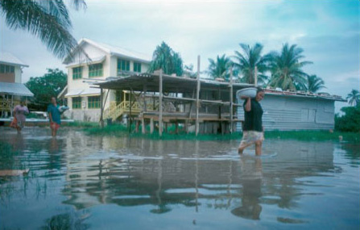
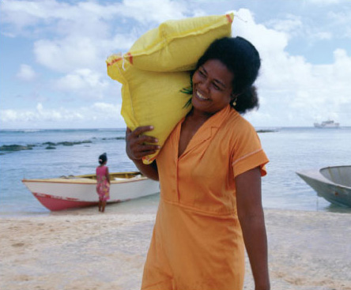
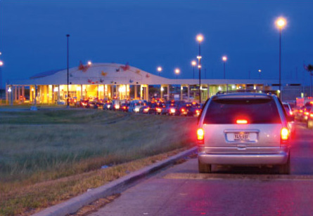

2 Island territories, ocean flows¶
2.1 Issues of responsibility¶
The aftermath of the 2004 Indian Ocean tsunami saw an unprecedented aid effort to assist the affected regions. In the early days after the disaster, pledges of financial assistance from overseas governments were often outstripped by the generosity of their own populaces. This was a case when ordinary people around the world saw and were moved by the tragic circumstances of others far away (Rose, 2006), and they responded with gifts of money and provisions, and even with offers of their own skills or labour.
There has yet to be a crisis of this magnitude that has been pinned to anthropogenic climate change, though warnings of large-scale catastrophes from scientists and activists now abound. In contrast to natural disasters, however, climate change raises the issue of a different sort of responsibility: an obligation to others that arises not simply out of an upwelling of sympathy, but out of a feeling of being implicated in the lives of island peoples and the predicament in which they find themselves.
Iris Marion Young (2003) has written of a kind of responsibility that comes about when we recognise that we are connected by our own actions to the suffering or injustice experienced by others who may live far away from us (see Allen, 2006). What concerns us in this section is the way in which these connections operate in a case where the actions in question transform the physical world on the global scale. To begin to grasp the issues of responsibility this raises, we must also grapple with these transformations. As this section will also argue, the concepts of territory and flow help us make sense of how the world changes, offering an understanding of events that might otherwise seem too vast, complex and chaotic to pass into the realms of political consideration.
2.2 Climate change in a globalised world¶
As you will recall from Reading 1A, the people of Tuvalu are now arguing that larger and more affluent nations should take responsibility for the climatic changes threatening their country. As Paani Laupepa from the Tuvalu environment ministry put it: ‘We are on the front line … through no fault of our own. The industrialised countries caused the problem, but we are suffering the consequences’ (Lynas, 2003). Before we look more closely at this charge, and the scientific evidence that is being compiled to support it, it is important to appreciate how the problems faced by Tuvalu form part of a much larger issue that implicates other countries or regions in different ways.
Activity 2¶
Question¶
I would like you to turn to Reading 1B by Molly Conisbee and Andrew Simms (2003) entitled ‘Environmental refugees: the case for recognition’, which you will find attached below. The aim of this piece is to gain recognition for people displaced by what the authors claim is accelerating environmental degradation. It addresses the issue in a general sense, gathering evidence from around the world.
As you are reading, note how often the terms ‘global’ or ‘international’ or some variants of these words appear.
What kind of relationships do you think the authors are attempting to establish between distant places?
What kind of image of the world are the authors seeking to convey?
Click to view Reading 1B (3 pages, 0.08MB).
Many claims are made in Reading 1B. You may have come across similar pronouncements in news media reporting. There are quite a lot of ‘ifs’ and ‘mights’ in the reading, and you should be mindful that some of the arguments are hotly contested (as we will see later in Section 4.3), although the references to Oxford University analysts, world organisations and international panels of scientists are intended to lend them a certain authority.
At the heart of Conisbee’s and Simms’s argument (2003) is a sense that the planet is being transformed in its entirety by human activity. The term ‘global’, as it prefixes the issue of climate change, points to flows or interconnectivities that link people and places over vast distances. Like Paani Laupepa from the Tuvalu environment ministry in Reading 1A, Conisbee and Simms make a strong case for the argument that what some people do on one side of the world has serious implications for the lives of others on the other side of the world.
Human-induced climate change, then, is not simply a process that takes place in a globalised world. It also helps bring the question of what we mean by ‘globalised world’ into focus, adding a powerful new dimension to the idea of an increasingly interconnected planet. The issues revolving around climate change do more than simply enfold all of us into a single, unified world. The geographical imagination suggested by Readings 1A and 1B is one that draws connections across great distances, yet also makes important distinctions between the conditions of life of people in different parts of the world. The issue of climate change prompts us to take account of flows around the globe, but also impels us to think in new ways about the countries or territories where most people live, most of the time.
2.3 Divisions that matter: thinking through territories¶
Without losing our focus on the planet as a whole, it is time now to return to what Paani Laupepa from Tuvalu refers to as the ‘front line’ of climate change: those islands that are particularly vulnerable to rising sea level and associated climatic hazards (Lynas, 2003). It has often been said that low-lying coral islands like Tuvalu or Kiribas in the Pacific Ocean, or the Maldives in the Indian Ocean, are acting as a kind of early warning system for global climate change. Sea level is expected to rise with even a modest increase in global temperatures, both because of the contribution of melting glacial ice to the world’s oceans and because water expands when its temperature rises.
As Conisbee and Simms (2003) remind us, the Intergovernmental Panel on Climate Change (IPCC) predicts a sea level rise over this century of somewhere between 9 and 88 cm. These figures seem at once strangely precise and wildly divergent, and it is not surprising that they provoke uncertainty and fear in the inhabitants of low-lying islands. Moreover, islanders and coastal dwellers in tropical regions face the prospect not only of gradually rising seas, but of an increase in the incidence and intensity of cyclones along with the temporary surges in sea level that accompany these storms. In Tuvalu, as we can see in Figure 4, high tides can also produce flooding.

Figure 4 Tuvalu: flooding during a very high tide
As we saw from Reading 1A, the island republic of Tuvalu has begun legal proceedings against some of the nation states it considers especially responsible for generating the hazards associated with anthropogenic climate change.
Activity 3¶
Question¶
Now turn to Reading 1C (Reuters News Service, 2002a) entitled Tiny Tuvalu sues United States over rising sea level’ and Reading 1D (Reuters News Service, 2002b) entitled Tuvalu seeks help in US global warming lawsuit’. Both of the news items in the readings emerged from the second Earth Summit, a gathering of representatives of countries from around the world which convened in Johannesburg, South Africa in 2002 to pick up on discussions about environmental issues in a worldwide context.
What do these reports tell us about divisions or differences within the ‘globalised world’?
In the light of this information, and what you have already read about Tuvalu and its people, where do you think the loyalties or attachments of the Tuvaluans lie?
Click to view Reading 1C (2 pages, 0.05MB).
Click to view Reading 1D (2 pages, 0.05MB).
The idea of ‘tiny Tuvalu’ (Reuters News Service, 2002a) – officially the world’s second smallest nation – taking on much larger countries like the USA has a kind of ‘David and Goliath’ feel to it. If the threat to Tuvalu has a clear global framing, the way in which the problem is being couched and responded to also seems to rely upon, if not to reinforce, a sense of separate countries or nation states. Indeed, there is a kind of ‘us’ and ‘them’ division which appears to be taking shape around the distinction between those who are likely to suffer the most from global climate change and those who have contributed the most to the problem. Statistics about energy consumption and contribution to carbon emissions add substance to this division.
Taken together, the four readings we have looked at suggest that the people of Tuvalu – or at least their spokespeople – tell a story which brings together a sense of the interconnectedness of global processes with a clear focus on the predicament of their own nation and other small island nations who are similarly at risk. It is interesting to note that Tuvalu only joined the United Nations (UN) in 1999, and did so in large part to draw attention to the islands’ vulnerability to climate change. The expense of being a UN member was easily covered by Tuvalu selling its internet domain address extension – which happened to be ‘.tv’ – the equivalent of the United Kingdom’s ‘.uk’, or Russia’s ‘.ru’. In 1998, a Californian company, Idealab, agreed to pay the government of Tuvalu US$4 million each year for the next 20 years in return for selling on the .tv address code to media companies who want to signal their role in television (such as 4kids.tv, hollywood.tv and bollywood.tv).
The Kyoto Protocol mentioned in Readings 1A, 1C and 1D was an agreement of the majority of the world’s nations to limit their carbon emissions, with the onus on the most developed or heavily industrialised economies. Though it was non-binding, the Kyoto Protocol nevertheless articulated a basic consensus that use of fossil fuels and other carbon-emitting activities were in the process of affecting global climate change. Negotiations were extremely complex, but at its simplest the Kyoto Protocol was based around the premise that countries or nation states should not persist in activities that are known to damage or threaten other countries.
Although global climate change raises new issues, the principle of nation states not impinging in harmful ways on the territories of other nation states is an old and familiar one (Batty and Gray, 1996). At the same time, it is often tensions or disagreements between nation states that bring the nation states’ distinctiveness and defining characteristics into clearer focus. In the case of Tuvalu, which achieved independence from UK rule in 1978, the issue of climate change seems also to be giving the people an opportunity to speak of their attachment to their islands and to voice what it is they find important about the place in which they live. As Tuvalu Finance Minister Bikenibeu Paeniu said: ‘we are not encouraging people to leave because of climate change. It’s our land. It’s where we live’ (Reuters News Service, 2002b).
Consequently in a paradoxical kind of way, the very threat to the territory of Tuvalu also seems to be helping define this territory, for the people who live there, and in the eyes of the wider world. But what exactly is under threat? Or to put it another way: what do we mean by ‘territory’? In Section 1, I talked about changes on a globe or map and the possibility of seeing areas of land alter their shape or even disappear completely. This scenario conveys a sense of ‘territory’ that may well feel quite familiar: that is, territory as a particular area or parcel of land. Viewed in this way, we can think of the territory of Tuvalu as the nine coral atolls lying in the South Pacific, a combined land area of around 10 square miles (26 square kilometres), which is inhabited (in 2005) by some 11,600 people.
When we view territory as a specific area of land, the kind of outlines or borders that we can see depicted on a map take on a special importance, for they play a major role in defining the territory in question. By identifying a border on a map, we can usually tell quite quickly and easily what belongs within a particular territory (an area, country or region) and what doesn’t. In other words, we can make a distinction between what is included and what is excluded: between an inside and an outside. But borders are not only important on maps. They also tend to play a big part in defining a territory at ‘ground level’, in the lived experience of those people who inhabit a particular piece of land. This border may be some recognisable physical feature, such as a river, mountain range or coastline. Or in other instances, especially in the case of a country or nation state, it might well be a human-made demarcation, such as a fence or wall.
A border, however, does more than simply divide a territory from the world around it. There is also an important sense in which it connects a territory with its surroundings, which is to say that it also functions as a zone of transition or a point of passage from one place to another (Figures 5 and 6. In this regard, passing through or crossing a border can be quite a momentous event, for it often marks a significant change in the conditions or circumstances under which people live. We can see this with particular clarity in the case of people who are desperate to cross from one country to another, those for whom a safe transit across a border can be a life-changing experience. But it is not only human beings whose lives may be transformed by passing through borders. As we will see in Section 3.2, crossing a border, such as the beach that separates land from ocean, can also mark an important transition for other, non-human, forms of life.

Figure 5 Border crossing at Tuvalu: carrying supplies across the beach

Figure 6 Border crossing from the USA to Mexico: queuing for customs
Borders, then, tend to play a practical and meaningful part in defining territories. But there are ways of defining territories other than through a consideration of boundaries or outlines. And there are ways of conceiving of, or experiencing, territory other than as a simple area of land. As accounts of the threat to Tuvalu seem to suggest, there is more at risk than changing outlines or diminished land area; something more is at stake than a certain area of land distributed among a certain number of people. Indeed, with the funds coming in from the sale of their internet domain address, the Tuvaluans could probably purchase some fairly substantial real estate elsewhere in the world.
What comes through in the voices of the people of Tuvalu is an attachment to their islands: the affirming of a whole way of life that is bound up with the place they live. And this points to a way of thinking about and experiencing territory not simply as a pocket of land, but more as a set of relationships. You might recall that in Reading 1A journalist Mark Lynas (2003) spoke of ‘a world that seemed to be unravelling’. ‘Unravelling’ suggests that a whole weave of ties or connections is being undone, evoking a sense of territory as a kind of pattern or fabric in which many different things are bound together.
In this sense, we might still conceive of territory as a particular parcel of land along with the borders around it, but we should keep in mind that there is a lot more going on as well: an interweaving of land with all its inhabitants and their ways of life. Viewed in this more complex sense, territory is not so easy for maps to depict. While a map, a globe or a satellite photograph of a region might give us the broad outlines of territories, it is difficult for such static images to reveal relationships between different elements and the patterns they form. But together with land areas and borders, it is this tangle of relationships that holds a territory such as the islands of Tuvalu together, giving it coherence and a character or identity of its own. In this regard, we might think of the various problems associated with changing climate as tugging at the weave of island territories, their increasing severity raising the chance that the whole might undo or come apart. In the extreme case, the scenario that former Prime Minister Toaripi Lauti talks of in Reading 1A, the people of Tuvalu may shift elsewhere. More than a simple move to another land, this could be viewed as entailing an unravelling and re-weaving of relationships.
In this section we have used the concept of territory as a way to help make sense of what it is that climate change threatens; what it is that people rally together to defend against such threats. The territory we have focused on is a group of atolls in the midst of the Pacific, which can be viewed at once as discrete pockets of land bordered by ocean, and as a weave of different elements. Each of the subsequent chapters in this book will look at other examples of territory, on a range of different scales – some much larger than these islands, others very much smaller. And in each case, we will see that what defines a particular territory is not just its size or shape and the borders which surround it, but also the relationships among the various things or ‘ingredients’ that make it up.
But once we start to think about territories as having borders, which are points of passage as well as barriers, and once we begin to consider the different elements of which territories are comprised, it soon becomes apparent that there is little sense in looking at territories in isolation. What are also important are the things which come and go – the movements and connections that link territories with the world around them. You will recall that we came to consider the notion of islands as territories under threat through the issue of the interplay between connectedness – on a global scale – and what it felt like to be at the ‘ground level’ of climate change in a particular place. Just as it is helpful to have a sense of how territories have their own distinct identities, which can really matter to all those who live there, it is important to understand how connections or flows play a part in the lives of territories. Section 2.4 explores this notion of ‘flow’, and what it means for our understanding of island life.
2.4 Worlds in motion: the importance of flows¶
‘The sea had welled up suddenly through thousands of tiny holes in this atoll’s bedrock of coral.’ Do you recall this passage in Lynas’s (2003) account of his first days on Tuvalu in Reading 1A? For me, this gives an impression of the islands being quite literally porous, a solid ground that reveals itself, now and again, to be not so solid after all. Lynas offers this particularly striking example of the island’s openness to the world around it as evidence of a growing vulnerability that results from global climate change. How else are islands open to the goings-on in the wider world? And just how novel are the openings or susceptibilities that climate change might bring to island territories?
Activity 4¶
Question¶
Now take another quick look through Readings 1A–D attached again below for your convenience. From what you have read in these excerpts, and in the course so far, what are the different ways that the islands of Tuvalu are open to or connected with the world beyond their shores? You may have to use your imagination a little and read between the lines. As you come up with ideas, it is worth pausing for a moment and considering what difference global climate change makes to these relations or connections. Are these new connections – or are they connections that have been in place for a long time?
Click to view Reading 1A (2 pages, 0.08 MB).
Click to view Reading 1B (3 pages, 0.08 MB).
Click to view Reading 1C (2 pages, 0.05 MB).
Click to view Reading 1D (2 pages, 0.05 MB).
In the readings, there seems to be a number of new connections or flows that are closely related to the climate change issue – especially the beginning of a new movement or migration of people, starting with the resettlement of some Tuvaluans in New Zealand. There is also the participation of representatives of Tuvalu in international institutions such as the UN, the International Court of Justice and the Earth Summit. In each case, climate change has been an important impetus to the Tuvaluans establishing or extending their connections with global communities.
There are other forms of interconnection that you may have picked up on, such as air travel which is related to climate change through its contribution to carbon dioxide emissions, and internet connections which bear less of a direct relation to climate change issues though they may play a part in communicating these issues. You may also have thought about the economic goods or products that enter Tuvalu or are exported to other countries – whether by air or sea. This serves as a reminder that the sea is not simply an element or force that threatens the islands, but also a medium of connectivity. In a simple, intuitive way, it is the sea that separates the islands of Tuvalu from other islands or land masses, forming an obvious border or edge in a territorial sense. Nevertheless, the sea is also a way of travelling to and from the islands, and in this sense it has long played a vital role in island life, as we will see in Section 3.
Furthermore, of course, climate itself is a matter of connections. Climate change, as we have seen, implicates Tuvalu in flows of air and water that may be in the process of transformation because of anthropogenic inputs. At the same time, it is important to keep in mind that weather or climatic systems must already have been operating ‘globally’ in order for these transformations to take place, a point we will be returning to in Section 4.
Islands and other territories may have discernible boundaries, then, but a great many things pass into, out of, over or through these boundaries. Such flows implicate the lives of those in each territory with those living in other territories in many different ways. The flow of economic goods from one country or territory to another, for example, draws the people of these countries together. As John Allen (2006) argues, the everyday lives of those who live in affluent countries are entangled with the working lives of people in relatively poorer countries through such practices as shopping for clothes and other goods that have been manufactured in sweatshop conditions.
In a similar sense, current understandings of human-induced climate change point to entanglements between people in distant territories. Changing flows brought about by altering the composition of the earth’s atmosphere connect distant places in a very physical way. Climate science makes the case that every single unit of non-renewable energy that is consumed, anywhere in the world, makes a small, cumulative addition to the planet’s overall energy budget – therefore impacting on the global climatic system as a whole.
Hypothetically, the energy consumed by the people of any one particular territory has an effect on every person in every territory across the planet’s surface, though in practice, the actual amount of this impact may be infinitesimal. This, as you may imagine, is a very complicated kind of entanglement indeed. It can be difficult enough to trace all the different transactions that bring a consumer of a manufactured item in one part of the world into contact with the person who produces the item in a faraway country. Yet the lines of connection or flow that link all of us together across the planet through our respective energy use are almost unthinkably complex.
For all that the precise lines of connection between our lives and the lives of distant others may be difficult to disentangle, global issues like climate change may be helping to transform the way we experience our world – contributing to new feelings of shared problems and common interests that span oceans and hemispheres. An understanding of how changing flows can threaten distant territories, gnawing at their boundaries and unravelling their fabric, can give a powerful emotional charge to such a sense of connection or entanglement. However, we have to be careful that the attention given to new and far-reaching flows – especially those flows that may endanger territories – does not leave us with the impression that these territories were once free of outside influence or disturbance.
Some of the flows we have looked at are certainly disturbing, but some of them are also sustaining and generative. Indeed, it is difficult to imagine any territory maintaining itself without such flows. Similarly, your own body, although it is discernibly individual and distinct from other people’s bodies, remains utterly reliant on things passing into it, flowing through it and passing out of it. In this sense, it is more useful to conceive of flows as having an ongoing and dynamic relationship with territories. Just as there are many different forms and compositions that territories take, so too are there many different kinds of flow. While some of these flows may help territories to form and consolidate themselves, others may exert stress and pressure upon them.
Summary¶
There is growing evidence that island territories are vulnerable to changes in climate triggered by the actions of people living in other parts of the world.
One way of conceiving of a territory is as an area of land surrounded by a border. This border serves both to divide the territory from the world around it, and to connect it with this wider world.
Another way of viewing territory is as a kind of pattern or weave composed of the relationships between different elements.
Different kinds of flow move within and between territories, keeping them in contact and in ongoing interchange with the surrounding world.
Territories and flows interact dynamically; flows can help to generate territories but can also destabilise them.